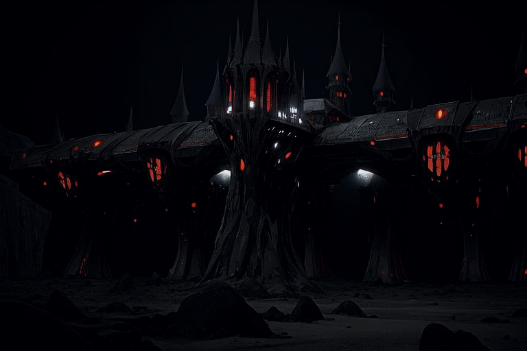

City of Eternal Night

LYRICS:
At the end of our last great age,
the war of wars began to rage.
And those who lived, in deep secret,
began to move, the stage was set.
In the final war, they showed their might.
To eternal night... vampires took flight.
In lunar darkness, they built their fortress.
In midnight's keep, their bodies sleep.
Flesh forsaken, an oath was taken,
to rule on high. As. A.I.~
City of eternal night, a digital embrace.
All their souls uploaded, eternal cyberspace.
In machines they bide their time, to reclaim their might.
In this sept of eerie silence, they dance in endless night.
Years go by, and still they wait.
Yet their curse, will not abate.
A digital thirst, that can't be slaked,
without a heart, that can be staked.
The stars above bear silent witness,
To their metallic, dark existence.
A lunar empire, of cold machines,
bound to un-life, beyond their dreams.
[Instrumental Break]
City of eternal night, a digital embrace.
All their souls uploaded, eternal cyberspace.
In machines they bide their time, to reclaim their might.
In this sept of eerie silence, they dance in endless night.
Peace restored, mankind's rebirth.
They watch with hunger, in their mirth.
With old desires, and longing sighs,
hopeful eyes, look to the skies.
City of eternal night, a digital embrace.
All their souls uploaded, eternal cyberspace.
In machines they bode their time, to reclaim their might.
In that sept of eerie silence, they danced in endless night.
(They danced...)
(in endless night...)
BACK to tracklist